高川山
| 日付 | 2026年5月16日（土） |
|---|---|
| 山域 | 御坂･天子山塊 |
| メンバー | グループ（7名） |
| 山行形態 | 日帰り |
| アクセス | 電車 |
| ルート (Map) | 初狩駅 (9:05) - (10:17) 高川山 (11:29) - (12:54) 田野倉駅 |
サークル山行で高川山に行く。
富士山展望地としてお気に入りの場所で、
快晴の本日は最高の富士山が眺められそうだ。
初狩駅に集合。標高460m。
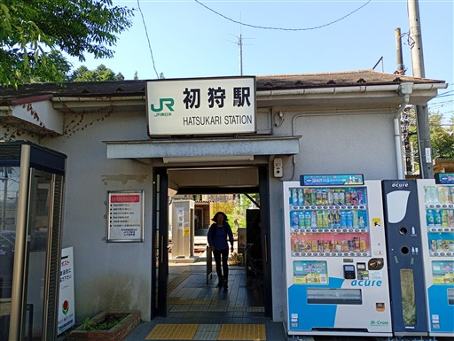
駅からは滝子山がきれいに見える。
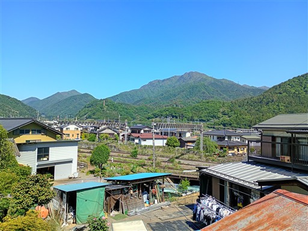
登山開始。標高の低い場所は植林地帯だ。
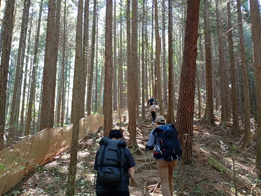
中腹以降は自然林。
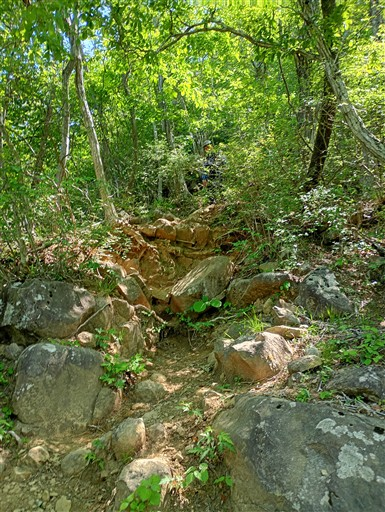
快適な尾根道。
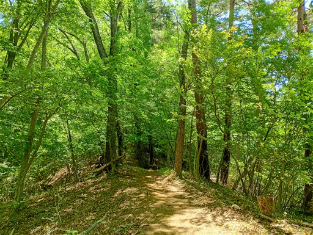
高川山の山頂に到着。標高976m。
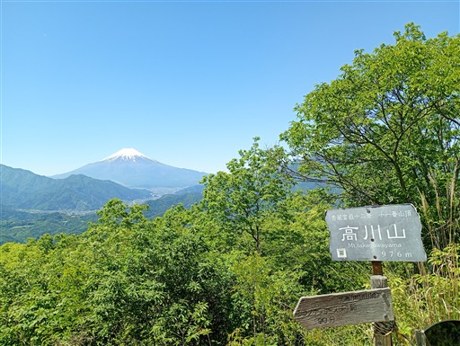
企画リーダーがラムネとスイカを持ってきてくれた。
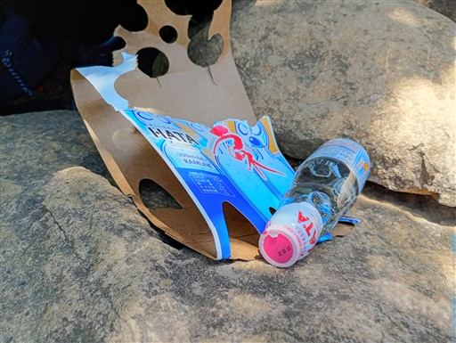
山頂からは最高の展望。ここからの富士山は構図が好きだ。
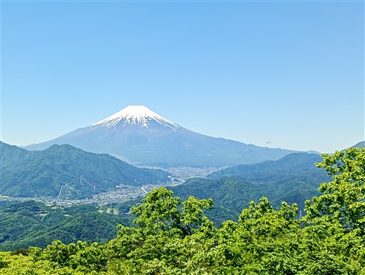
大量のアリが岩の上にいる。アリの巣があるのだろうか？
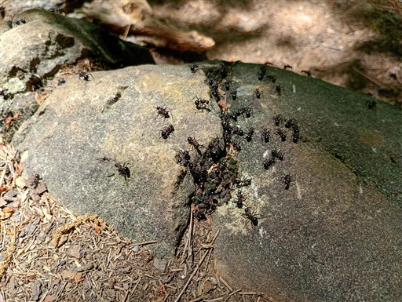
こちらの尾根も緑が美しい良い尾根だ。
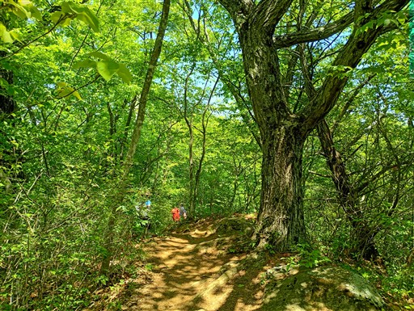
馬頭観音。
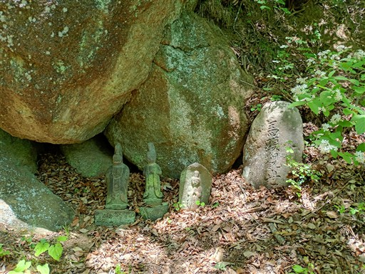
無事下山。
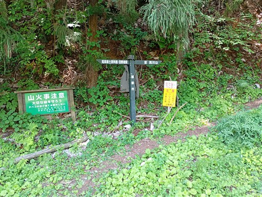
眼下に流れるのは桂川。
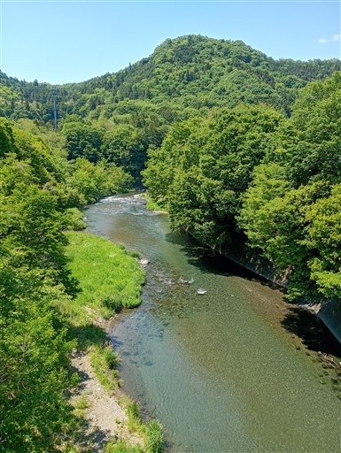
田野倉駅に到着。標高395m。
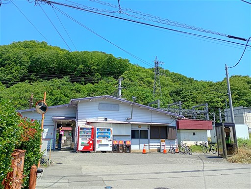
八王子に移動して稲荷湯へ。
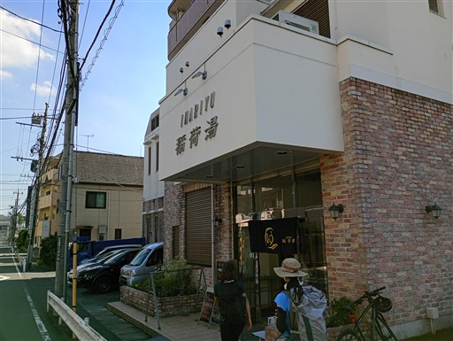
その後は打ち上げ。
短い行程だったが、快晴の下、最高の富士山を眺められた山行だった。
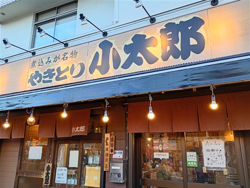
他の山行記録